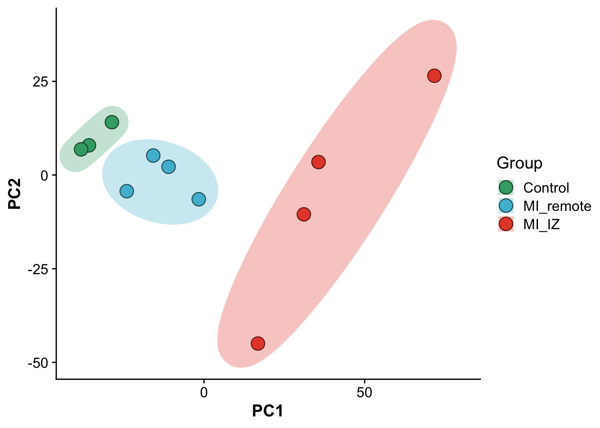
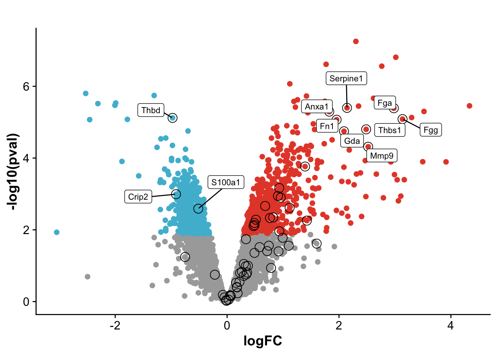
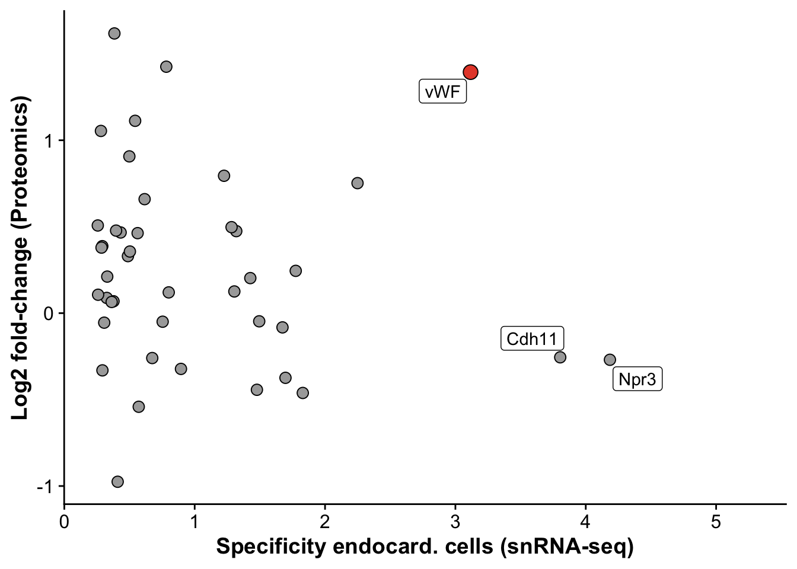
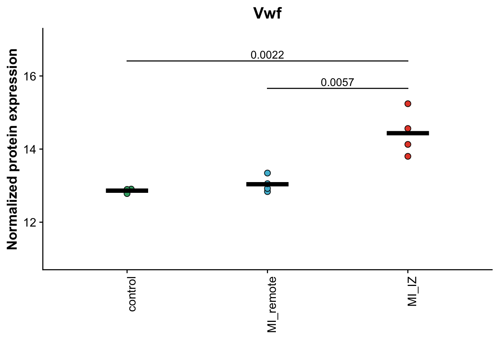
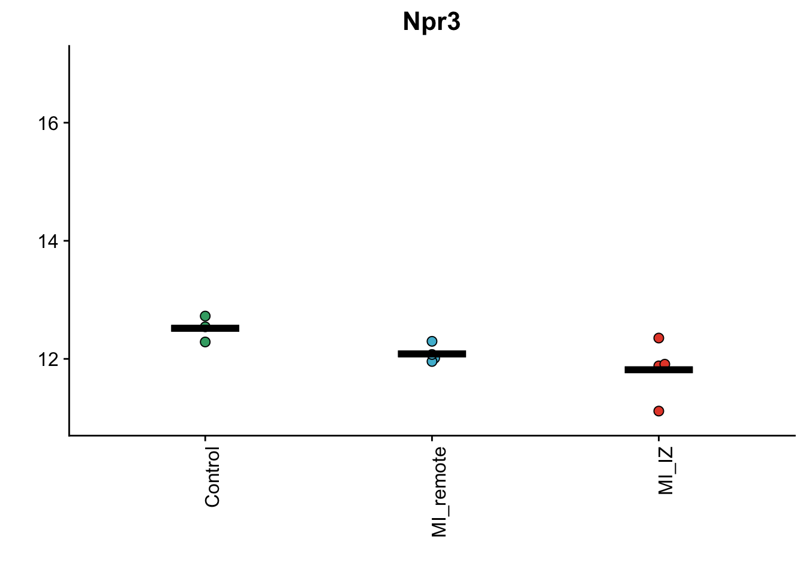
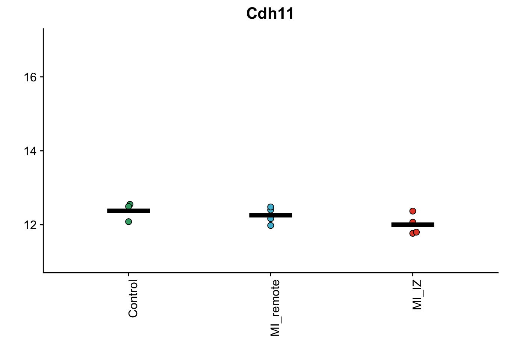
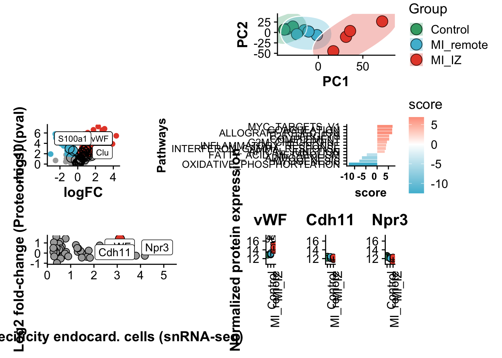

figures.figure_5
FloWuenne
2023-06-27
Last updated: 2023-07-23
Checks: 7 0
Knit directory: mi_spatialomics/
This reproducible R Markdown analysis was created with workflowr (version 1.7.0). The Checks tab describes the reproducibility checks that were applied when the results were created. The Past versions tab lists the development history.
Great! Since the R Markdown file has been committed to the Git repository, you know the exact version of the code that produced these results.
Great job! The global environment was empty. Objects defined in the global environment can affect the analysis in your R Markdown file in unknown ways. For reproduciblity it’s best to always run the code in an empty environment.
The command set.seed(20230612) was run prior to running
the code in the R Markdown file. Setting a seed ensures that any results
that rely on randomness, e.g. subsampling or permutations, are
reproducible.
Great job! Recording the operating system, R version, and package versions is critical for reproducibility.
Nice! There were no cached chunks for this analysis, so you can be confident that you successfully produced the results during this run.
Great job! Using relative paths to the files within your workflowr project makes it easier to run your code on other machines.
Great! You are using Git for version control. Tracking code development and connecting the code version to the results is critical for reproducibility.
The results in this page were generated with repository version d6085a2. See the Past versions tab to see a history of the changes made to the R Markdown and HTML files.
Note that you need to be careful to ensure that all relevant files for
the analysis have been committed to Git prior to generating the results
(you can use wflow_publish or
wflow_git_commit). workflowr only checks the R Markdown
file, but you know if there are other scripts or data files that it
depends on. Below is the status of the Git repository when the results
were generated:
Ignored files:
Ignored: .DS_Store
Ignored: .Rhistory
Ignored: .Rproj.user/
Ignored: analysis/.DS_Store
Ignored: data/.DS_Store
Ignored: data/.Rapp.history
Ignored: data/140623.calcagno_et_al.seurat_object.rds
Ignored: omnipathr-log/
Ignored: plots/
Ignored: references/.DS_Store
Ignored: renv/.DS_Store
Ignored: renv/library/
Ignored: renv/staging/
Untracked files:
Untracked: data/cells_per_region.tsv
Untracked: figures.supplementary_figure_3.Rmd
Untracked: figures/Supplementary_figure_5.segmentation_metrics.poster.eps
Unstaged changes:
Deleted: analysis/figures.supplementary_Figure_3.Rmd
Modified: code/functions.R
Modified: figures/Figure_5.eps
Modified: figures/Figure_5.pdf
Modified: figures/Figure_5.png
Modified: figures/Figure_5.svg
Modified: figures/Supplementary_figure_5.segmentation_metrics.eps
Modified: figures/Supplementary_figure_5.segmentation_metrics.png
Note that any generated files, e.g. HTML, png, CSS, etc., are not included in this status report because it is ok for generated content to have uncommitted changes.
These are the previous versions of the repository in which changes were
made to the R Markdown (analysis/figures.figure_5.Rmd) and
HTML (docs/figures.figure_5.html) files. If you’ve
configured a remote Git repository (see ?wflow_git_remote),
click on the hyperlinks in the table below to view the files as they
were in that past version.
| File | Version | Author | Date | Message |
|---|---|---|---|---|
| Rmd | d6085a2 | FloWuenne | 2023-07-23 | Upadte since error for building. |
| Rmd | ed31d81 | FloWuenne | 2023-07-02 | Finalized proteomics analysis. |
| html | ed31d81 | FloWuenne | 2023-07-02 | Finalized proteomics analysis. |
Load data
pca_res <- readRDS("./output/proteomics.pca_res.rds")
vsn_mat <- fread("./output/proteomics.vsn_norm_proteins.tsv")
limma_res <- fread("./output/limma.full_statistics.tsv")
mi_pathways <- fread("./output/proteomics.pathway_results.MIiz_MIremote.tsv")
snrna_prot <- fread("./output/proteomics.snRNAseq_comp.tsv")Subfigure A
Subfigure B - Principal component analysis
pcs <- as.data.frame(pca_res$x)
pcs$sample <- colnames(vsn_mat[,1:11])
pcs <- pcs %>%
mutate("group" = if_else(grepl("control",sample),"control",
if_else(grepl("MI_IZ",sample),"MI_IZ","MI_remote"))
)
## Set order of groups
pcs$group <- factor(pcs$group,
levels = c("control","MI_remote","MI_IZ"))
## Plot PCs
pca_plot <- ggplot(pcs,aes(PC1,PC2, fill = group)) +
geom_point(size = 5,pch = 21,color = "black") +
ggforce::geom_mark_ellipse(color = "white") +
expand_limits(y = c(-50, 40),
x = c(-40,80)) +
scale_fill_manual(values = proteome_palette,
labels = c("Control","MI_remote","MI_IZ")) +
labs(color = "Group") +
guides(fill=guide_legend(title="Group")) +
theme(legend.position = "right")
pca_plotWarning: Using the `size` aesthetic in this geom was deprecated in ggplot2 3.4.0.
ℹ Please use `linewidth` in the `default_aes` field and elsewhere instead.
This warning is displayed once every 8 hours.
Call `lifecycle::last_lifecycle_warnings()` to see where this warning was
generated.
| Version | Author | Date |
|---|---|---|
| ed31d81 | FloWuenne | 2023-07-02 |
Subfigure C - Volcano plot: Remote vs control
limma_mi_remote <- subset(limma_res,analysis == "MI_IZ_vs_MI_remote")
## Get proteins from Coagulation pathway from pathway analysis results to highlight on volcano plot
mh_gsea_net <- readRDS("references/mh.all.v2023.1.Mm.symbols.sets.rds")
pathway <- 'HALLMARK_COAGULATION'
df <- mh_gsea_net %>%
filter(source == pathway) %>%
arrange(target)
path_de_inter <- sort(intersect(limma_mi_remote$gene,df$target))top_10_genes <- limma_mi_remote %>%
arrange(desc(logFC)) %>%
top_n(wt = logFC, 10)
top_10_genes <- top_10_genes$gene
bottom_10_genes <- limma_mi_remote %>% arrange(desc(logFC))
bottom_10_genes <- tail(bottom_10_genes,n=10)
limma_mi_remote <- limma_mi_remote %>%
mutate("label_protein" = if_else(gene %in% path_de_inter & adj.P.Val < 0.05 & (logFC > 1.25 | logFC < 0), gene, ""))
limma_mi_remote$label_protein <- gsub("Vwf","vWF",limma_mi_remote$label_protein)
volc_limma_IZ_remote <- plot_pretty_volcano(limma_mi_remote,
pt_size = 2,
plot_title = "",
sig_thresh = 0.05,
col_pos_logFC = proteome_palette[['MI_IZ']],
col_neg_logFC = proteome_palette[['MI_remote']]) +
geom_point(data = subset(limma_mi_remote, gene %in% path_de_inter),pch = 21, color = "black", size = 4) +
geom_label_repel(box.padding = 0.5, max.overlaps = Inf, size = 3)
volc_limma_IZ_remoteWarning: Removed 2 rows containing missing values (`geom_point()`).Warning: Removed 58 rows containing missing values (`geom_label_repel()`).
| Version | Author | Date |
|---|---|---|
| ed31d81 | FloWuenne | 2023-07-02 |
Subfigure D - Pathway enrichment for MI_IZ vs MI_remote
sig_pathways_mi <- subset(mi_pathways,p_value <= 0.05) %>%
arrange(desc(score)) %>%
dplyr::select(-statistic,-condition) %>%
subset(score > 3 | score < -3)
sig_pathways_mi$source <- gsub("HALLMARK_","",sig_pathways_mi$source)
path_plot <- ggplot(sig_pathways_mi, aes(x = reorder(source, score), y = score)) +
geom_bar(aes(fill = score), stat = "identity") +
scale_fill_gradient2(low = proteome_palette[['MI_remote']], high = proteome_palette[['MI_IZ']],
mid = "white", midpoint = 0) +
theme(axis.title = element_text(face = "bold", size = 12),
axis.text.x = element_text(hjust = 1, size =10, face= "bold"),
axis.text.y = element_text(size =10),
panel.grid.major = element_blank(),
panel.grid.minor = element_blank()) +
xlab("Pathways") +
coord_flip()
path_plot
| Version | Author | Date |
|---|---|---|
| ed31d81 | FloWuenne | 2023-07-02 |
Subfigure E - Vwf specificity for Endocardial cells
snrna_prot <- snrna_prot %>%
mutate("label_gene" = if_else(gene %in% c("Npr3","Cdh11"),gene,
if_else(gene == "Vwf","vWF","")))
endo_proteomic_corr <- ggplot(snrna_prot,aes(avg_log2FC,logFC,
label = label_gene)) +
geom_point(data =subset(snrna_prot,gene != "Vwf"), size =3, fill = "darkgrey", pch = 21) +
geom_point(data = subset(snrna_prot,gene == "Vwf"),size = 4, fill = proteome_palette[['MI_IZ']], pch = 21) +
geom_label_repel() +
labs(x = "Specificity endocard. cells (snRNA-seq)",
y = "Log2 fold-change (Proteomics)")
endo_proteomic_corrWarning: Removed 156 rows containing missing values (`geom_point()`).Warning: Removed 156 rows containing missing values (`geom_label_repel()`).
| Version | Author | Date |
|---|---|---|
| ed31d81 | FloWuenne | 2023-07-02 |
Subfigure F - Vwf is upregulated in MI_IZ
vsn_matrix <- fread("./output/proteomics.vsn_norm_proteins.tsv")
colnames(vsn_matrix)[1:11] <- paste("s",1:11,colnames(vsn_matrix)[1:11],sep="_")
protein_sub <- vsn_matrix %>%
dplyr::select(1:11,gene) %>%
pivot_longer(1:11,names_to = "sample", values_to = "exp") %>%
mutate("group" = if_else(grepl("control",sample),"control",
if_else(grepl("MI_IZ",sample),
"MI_IZ","MI_remote"))
)
protein_sub$group <- gsub("control","Control",protein_sub$group)
protein_sub$group <- factor(protein_sub$group,
levels = c("Control","MI_remote","MI_IZ"))
## Barplot with points as alternative.
goi <- "Vwf"
vwf_plot_bar <- plot_proteomics_boxplot(norm_table = protein_sub,
protein = goi,
style = "bar") +
geom_signif(comparisons = list(c("MI_IZ","MI_remote")),
tip_length = 0, annotation = "0.0057", y_position = 15.5) +
geom_signif(comparisons = list(c("MI_IZ","Control")),
tip_length = 0, annotation = "0.0022", y_position = 16.5) +
expand_limits(y = c(13, 17)) +
theme(axis.text.x = element_text(angle = 90, vjust = 1, hjust=1)) +
labs(x = "")Warning: The `fun.y` argument of `stat_summary()` is deprecated as of ggplot2 3.3.0.
ℹ Please use the `fun` argument instead.
This warning is displayed once every 8 hours.
Call `lifecycle::last_lifecycle_warnings()` to see where this warning was
generated.Warning: Using `size` aesthetic for lines was deprecated in ggplot2 3.4.0.
ℹ Please use `linewidth` instead.
This warning is displayed once every 8 hours.
Call `lifecycle::last_lifecycle_warnings()` to see where this warning was
generated.## Median plot with points
yaxis_limits <- c(11,17)
goi <- "Vwf"
vwf_plot <- plot_proteomics_boxplot(norm_table = protein_sub,
protein = goi,
style = "mean") +
geom_signif(comparisons = list(c("MI_IZ","MI_remote")),
tip_length = 0, annotation = "0.0057", y_position = 15.5,) +
geom_signif(comparisons = list(c("MI_IZ","Control")),
tip_length = 0, annotation = "0.0022", y_position = 16.25) +
expand_limits(y = c(13, 16)) +
theme(axis.text.x = element_text(angle = 90, vjust = 1, hjust=1)) +
labs(x = "") +
ylim(yaxis_limits)
vwf_plotWarning: The dot-dot notation (`..y..`) was deprecated in ggplot2 3.4.0.
ℹ Please use `after_stat(y)` instead.
This warning is displayed once every 8 hours.
Call `lifecycle::last_lifecycle_warnings()` to see where this warning was
generated.
| Version | Author | Date |
|---|---|---|
| ed31d81 | FloWuenne | 2023-07-02 |
## Median plot with points
goi <- "Npr3"
npr3_plot <- plot_proteomics_boxplot(norm_table = protein_sub,
protein = goi,
style = "mean") +
theme(axis.text.x = element_text(angle = 90, vjust = 1, hjust=1)) +
labs(x = "") +
ylim(yaxis_limits) +
labs(y = "")
npr3_plot
| Version | Author | Date |
|---|---|---|
| ed31d81 | FloWuenne | 2023-07-02 |
## Median plot with points
goi <- "Cdh11"
cd11_plot <- plot_proteomics_boxplot(norm_table = protein_sub,
protein = goi,
style = "mean") +
theme(axis.text.x = element_text(angle = 90, vjust = 1, hjust=1)) +
labs(x = "") +
ylim(yaxis_limits) +
labs(y = "")
cd11_plot
| Version | Author | Date |
|---|---|---|
| ed31d81 | FloWuenne | 2023-07-02 |
Assemble final figure
final_fig5_top <- plot_spacer() + pca_plot + plot_layout(widths = c(1.5, 1))
final_fig5_mid <- volc_limma_IZ_remote + plot_spacer() + path_plot +
plot_layout(widths = c(1.5, 0.2, 1))
combined_prot_plot <- vwf_plot + cd11_plot + npr3_plot
final_fig5_bottom <- endo_proteomic_corr + plot_spacer() + combined_prot_plot + plot_layout(widths = c(1, 0.2, 1))
final_fig5 <- final_fig5_top / final_fig5_mid / final_fig5_bottom +plot_layout(heights= c(1, 1, 0.7))
final_fig5 <- final_fig5 +
#plot_annotation(tag_levels = 'A') &
#theme(plot.tag = element_text(size = 25)) +
theme(plot.background = element_rect(fill = "white"))
final_fig5Warning: Removed 2 rows containing missing values (`geom_point()`).Warning: Removed 58 rows containing missing values (`geom_label_repel()`).Warning: Removed 156 rows containing missing values (`geom_point()`).Warning: Removed 156 rows containing missing values (`geom_label_repel()`).
#plot_width <- 8.5
plot_height <- 11
plot_asp <- 1.3
save_plot(filename = "./figures/Figure_5.png",
plot = final_fig5,
base_asp = plot_asp,
base_height = plot_height)Warning: Removed 2 rows containing missing values (`geom_point()`).Warning: Removed 58 rows containing missing values (`geom_label_repel()`).Warning: Removed 156 rows containing missing values (`geom_point()`).Warning: Removed 156 rows containing missing values (`geom_label_repel()`).save_plot(filename = "./figures/Figure_5.eps",
plot = final_fig5,
base_asp = plot_asp,
base_height = plot_height)Warning: Removed 2 rows containing missing values (`geom_point()`).Warning: Removed 58 rows containing missing values (`geom_label_repel()`).Warning: Removed 156 rows containing missing values (`geom_point()`).Warning: Removed 156 rows containing missing values (`geom_label_repel()`).Warning in grid.Call.graphics(C_polygon, x$x, x$y, index): semi-transparency is
not supported on this device: reported only once per pagesave_plot(filename = "./figures/Figure_5.pdf",
plot = final_fig5,
base_asp = plot_asp,
base_height = plot_height)Warning: Removed 2 rows containing missing values (`geom_point()`).Warning: Removed 58 rows containing missing values (`geom_label_repel()`).Warning: Removed 156 rows containing missing values (`geom_point()`).Warning: Removed 156 rows containing missing values (`geom_label_repel()`).save_plot(filename = "./figures/Figure_5.svg",
plot = final_fig5,
base_asp = plot_asp,
base_height = plot_height)Warning: Removed 2 rows containing missing values (`geom_point()`).Warning: Removed 58 rows containing missing values (`geom_label_repel()`).Warning: Removed 156 rows containing missing values (`geom_point()`).Warning: Removed 156 rows containing missing values (`geom_label_repel()`).Figures for poster
final_fig5_top <- plot_spacer() + pca_plot + plot_layout(widths = c(1.5, 1))
post_middle <- path_plot + plot_spacer() + endo_proteomic_corr + plot_layout(widths = c(1, 0.2, 1))
combined_prot_plot <- vwf_plot + npr3_plot
final_fig5_bottom <- combined_prot_plot + plot_spacer() + plot_layout(widths = c(1, 1, 3))
final_fig5_poster1 <- final_fig5_top / post_middle / post_middle +plot_layout(heights= c(1, 1, 1))
plot_height <- 11
plot_asp <- 1.3
save_plot(filename = "../results/Rotterdam_poster_proteomics.middle.eps",
plot = final_fig5_poster1,
base_asp = plot_asp,
base_height = plot_height)Warning: Removed 156 rows containing missing values (`geom_point()`).Warning: Removed 156 rows containing missing values (`geom_label_repel()`).Warning: Removed 156 rows containing missing values (`geom_point()`).Warning: Removed 156 rows containing missing values (`geom_label_repel()`).Warning in grid.Call.graphics(C_polygon, x$x, x$y, index): semi-transparency is
not supported on this device: reported only once per pagefinal_fig5_poster_2<- final_fig5_top / final_fig5_bottom / final_fig5_bottom +plot_layout(heights= c(1, 1, 1))
plot_height <- 11
plot_asp <- 1.3
save_plot(filename = "../results/Rotterdam_poster_proteomics.version2.eps",
plot = final_fig5_poster_2,
base_asp = plot_asp,
base_height = plot_height)Warning in grid.Call.graphics(C_polygon, x$x, x$y, index): semi-transparency is
not supported on this device: reported only once per page
sessionInfo()R version 4.2.3 (2023-03-15)
Platform: aarch64-apple-darwin20 (64-bit)
Running under: macOS Ventura 13.4.1
Matrix products: default
BLAS: /Library/Frameworks/R.framework/Versions/4.2-arm64/Resources/lib/libRblas.0.dylib
LAPACK: /Library/Frameworks/R.framework/Versions/4.2-arm64/Resources/lib/libRlapack.dylib
locale:
[1] en_US.UTF-8/en_US.UTF-8/en_US.UTF-8/C/en_US.UTF-8/en_US.UTF-8
attached base packages:
[1] stats graphics grDevices datasets utils methods base
other attached packages:
[1] ggsci_3.0.0 cowplot_1.1.1 ggforce_0.4.1 patchwork_1.1.2
[5] ggsignif_0.6.4 ggbeeswarm_0.7.2 ggrepel_0.9.3 here_1.0.1
[9] data.table_1.14.8 lubridate_1.9.2 forcats_1.0.0 stringr_1.5.0
[13] dplyr_1.1.2 purrr_1.0.1 readr_2.1.4 tidyr_1.3.0
[17] tibble_3.2.1 ggplot2_3.4.2 tidyverse_2.0.0 workflowr_1.7.0
loaded via a namespace (and not attached):
[1] httr_1.4.6 sass_0.4.6 jsonlite_1.8.4
[4] bslib_0.4.2 getPass_0.2-2 BiocManager_1.30.21
[7] highr_0.10 renv_0.17.3 vipor_0.4.5
[10] yaml_2.3.7 pillar_1.9.0 glue_1.6.2
[13] digest_0.6.31 promises_1.2.0.1 polyclip_1.10-4
[16] colorspace_2.1-0 htmltools_0.5.5 httpuv_1.6.11
[19] pkgconfig_2.0.3 scales_1.2.1 processx_3.8.0
[22] svglite_2.1.1 tweenr_2.0.2 whisker_0.4.1
[25] later_1.3.1 tzdb_0.4.0 timechange_0.2.0
[28] git2r_0.32.0 generics_0.1.3 farver_2.1.1
[31] cachem_1.0.8 withr_2.5.0 cli_3.6.1
[34] magrittr_2.0.3 crayon_1.5.2 evaluate_0.21
[37] ps_1.7.4 fs_1.6.2 fansi_1.0.4
[40] MASS_7.3-58.2 beeswarm_0.4.0 textshaping_0.3.6
[43] tools_4.2.3 hms_1.1.3 lifecycle_1.0.3
[46] munsell_0.5.0 callr_3.7.3 compiler_4.2.3
[49] jquerylib_0.1.4 systemfonts_1.0.4 rlang_1.1.1
[52] grid_4.2.3 rstudioapi_0.14 labeling_0.4.2
[55] rmarkdown_2.21 gtable_0.3.3 R6_2.5.1
[58] knitr_1.42 fastmap_1.1.1 utf8_1.2.3
[61] rprojroot_2.0.3 ragg_1.2.5 stringi_1.7.12
[64] Rcpp_1.0.10 vctrs_0.6.2 tidyselect_1.2.0
[67] xfun_0.39